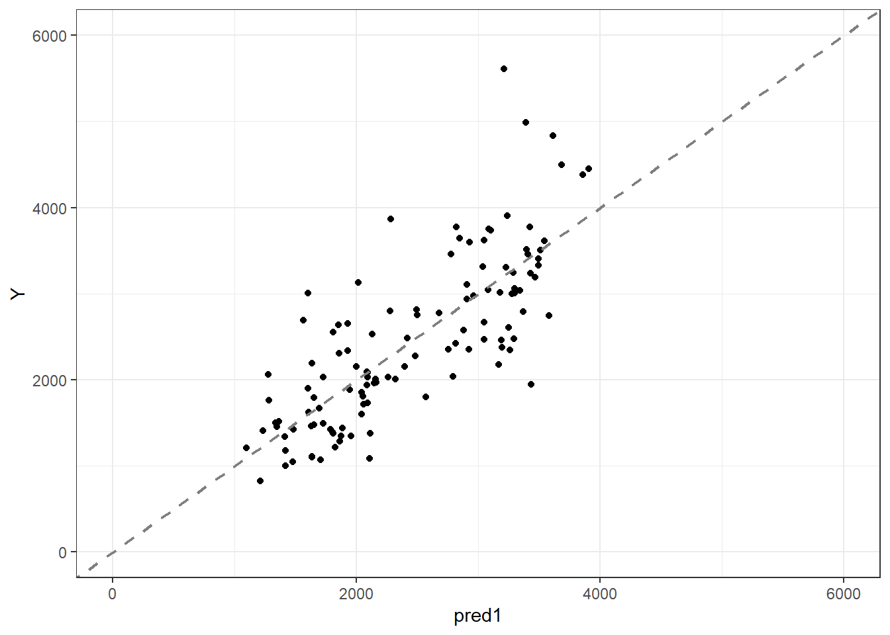
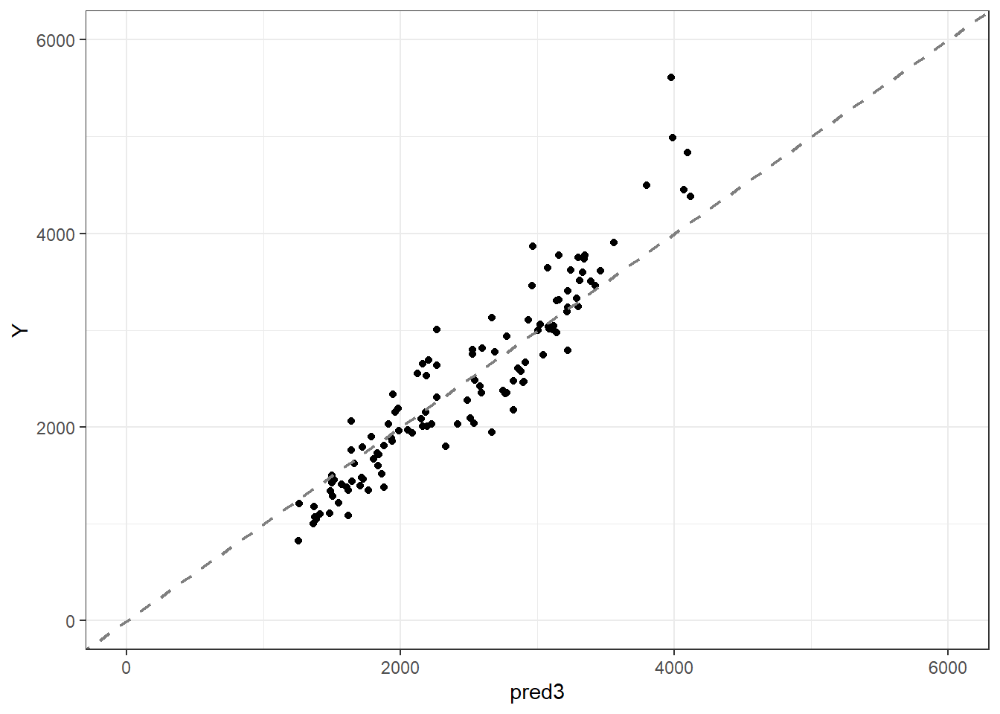
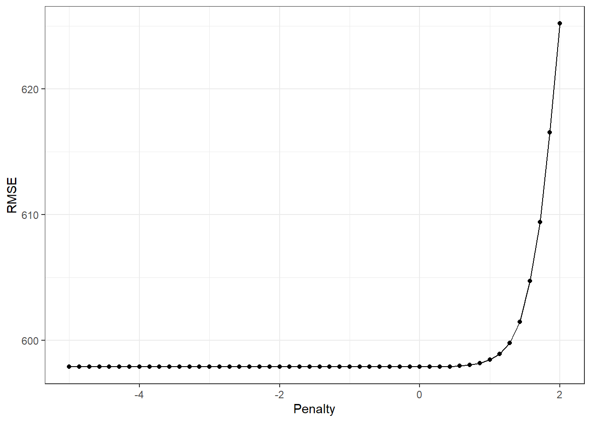
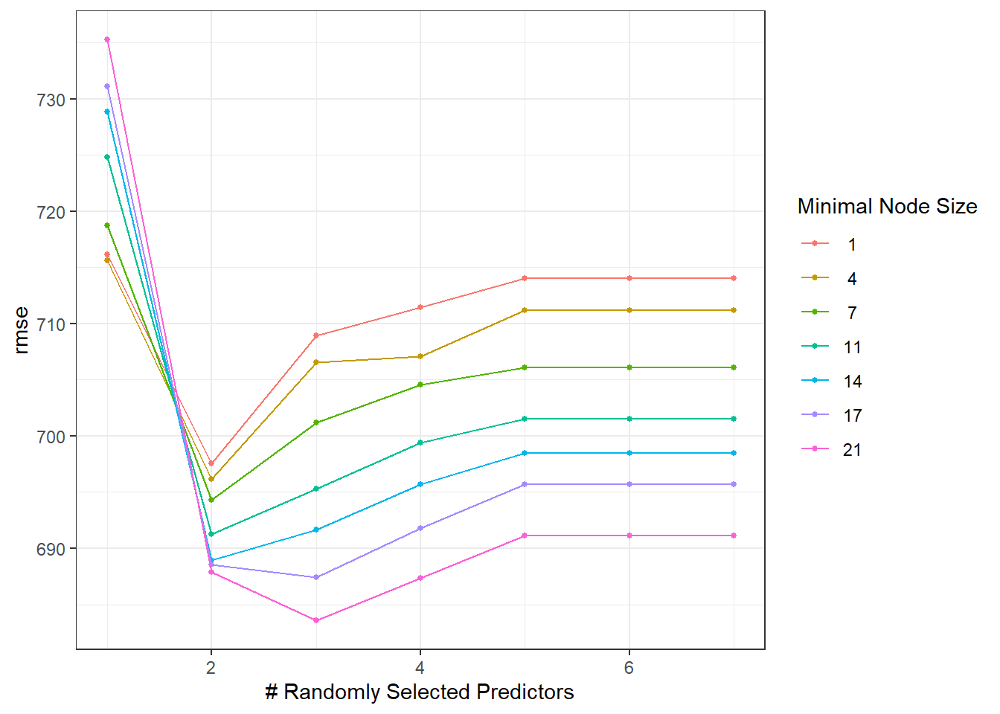

Y WT HT
Y 1.0000000 -0.2128719 -0.1583297
WT -0.2128719 1.0000000 0.5997505
HT -0.1583297 0.5997505 1.0000000
#New feature BMIdata$BMI <- (data$WT/(data$HT^2))
#Creating 3 models#Linear regressionmodel1 <-linear_reg() %>%set_engine("lm") %>%fit(Y ~ DOSE + AGE + SEX + WT + HT, data = data)#LASSOmodel2 <-linear_reg(penalty =0.1) %>%set_engine("glmnet") %>%fit(Y ~ DOSE + AGE + SEX + WT + HT, data = data)#Random forestmodel3 <-rand_forest(mode ="regression") %>%set_engine("ranger", seed = rngseed) %>%fit(Y ~ DOSE + AGE + SEX + WT + HT, data = data)
#Predictions for each modelpred1 <-predict(model1, new_data = data) pred2 <-predict(model2, new_data = data)pred3 <-predict(model3, new_data = data) #Adding predictions into datadata <- data %>%mutate(pred1 =predict(model1, new_data = data, type ="numeric")$.pred,pred2 =predict(model2, new_data = data, type ="numeric")$.pred,pred3 =predict(model3, new_data = data, type ="numeric")$.pred )#RSME values for each modelrmse(data, truth = Y, estimate = pred1)
# A tibble: 1 × 3
.metric .estimator .estimate
<chr> <chr> <dbl>
1 rmse standard 598.
rmse(data, truth = Y, estimate = pred2)
# A tibble: 1 × 3
.metric .estimator .estimate
<chr> <chr> <dbl>
1 rmse standard 598.
rmse(data, truth = Y, estimate = pred3)
# A tibble: 1 × 3
.metric .estimator .estimate
<chr> <chr> <dbl>
1 rmse standard 366.
#Plotting predicted vs observed#Model1ggplot(data, aes(y = Y, x = pred1)) +geom_point() +geom_abline(slope =1, intercept =0, color ="gray50", linewidth =0.8, linetype ="dashed") +lims(x =c(0, 6000), y =c(0, 6000)) +theme_bw()

#Model2ggplot(data, aes(y = Y, x = pred2)) +geom_point() +geom_abline(slope =1, intercept =0, color ="gray50", linewidth =0.8, linetype ="dashed") +lims(x =c(0, 6000), y =c(0, 6000)) +theme_bw()
#Model3ggplot(data, aes(y = Y, x = pred3)) +geom_point() +geom_abline(slope =1, intercept =0, color ="gray50", linewidth =0.8, linetype ="dashed") +lims(x =c(0, 6000), y =c(0, 6000)) +theme_bw()

#LASSO model tuning#set specslasso_model <-linear_reg(penalty =tune(), mixture =1) %>%set_engine("glmnet")#set recipelasso_recipe <-recipe(Y ~ DOSE + AGE + SEX + WT + HT, data = data) %>%step_dummy(all_nominal_predictors()) %>%step_normalize(all_numeric_predictors(), -all_outcomes())#establish workflow using specs and recipelasso_workflow <-workflow() %>%add_model(lasso_model) %>%add_recipe(lasso_recipe)#create penalty gridlasso_grid <-tibble(penalty =10^seq(-5, 2, length.out =50))#resampling with apparent()lasso_app <-apparent(data)#reset seedset.seed(rngseed)#Lasso grid tune objectlasso_tune <-tune_grid( lasso_workflow,resamples = lasso_app,grid = lasso_grid,metrics =metric_set(rmse),control =control_grid(save_pred =TRUE))#print predictionscollect_predictions(lasso_tune)
#plot manually, autoplot() did not worklasso_tune %>%collect_metrics(summarize =FALSE) %>%filter(.metric =="rmse") %>%ggplot(aes(x =log(penalty, base =10), y = .estimate)) +geom_line() +geom_point() +labs(x ="Penalty",y ="RMSE" )+theme_bw()

As the penalty increases, LASSO shrinks coefficients and reduces model flexibility, introducing bias and increasing RMSE; since linear regression is the unpenalized optimum, LASSO cannot achieve a lower RMSE than the linear model when evaluated on the training data.
→ A | warning: ! 6 columns were requested but there were 5 predictors in the data.
ℹ 5 predictors will be used.
There were issues with some computations A: x1
→ B | warning: ! 7 columns were requested but there were 5 predictors in the data.
ℹ 5 predictors will be used.
There were issues with some computations A: x1
There were issues with some computations A: x2 B: x1
There were issues with some computations A: x3 B: x2
There were issues with some computations A: x4 B: x4
There were issues with some computations A: x6 B: x5
There were issues with some computations A: x7 B: x6
There were issues with some computations A: x7 B: x7
→ A | warning: ! 6 columns were requested but there were 5 predictors in the data.
ℹ 5 predictors will be used.
There were issues with some computations A: x1
→ B | warning: ! 7 columns were requested but there were 5 predictors in the data.
ℹ 5 predictors will be used.
There were issues with some computations A: x1
There were issues with some computations A: x9 B: x6
There were issues with some computations A: x36 B: x30
There were issues with some computations A: x58 B: x50
There were issues with some computations A: x81 B: x69
There were issues with some computations A: x113 B: x98
There were issues with some computations A: x121 B: x104
There were issues with some computations A: x161 B: x140
There were issues with some computations A: x172 B: x149
There were issues with some computations A: x193 B: x167
There were issues with some computations A: x225 B: x196
There were issues with some computations A: x240 B: x208
There were issues with some computations A: x273 B: x238
There were issues with some computations A: x284 B: x247
There were issues with some computations A: x316 B: x275
There were issues with some computations A: x337 B: x294
There were issues with some computations A: x352 B: x306
There were issues with some computations A: x393 B: x343
There were issues with some computations A: x408 B: x355
There were issues with some computations A: x448 B: x392
There were issues with some computations A: x457 B: x398
There were issues with some computations A: x497 B: x434
There were issues with some computations A: x508 B: x443
There were issues with some computations A: x529 B: x461
There were issues with some computations A: x561 B: x490
There were issues with some computations A: x576 B: x502
There were issues with some computations A: x617 B: x539
There were issues with some computations A: x625 B: x545
There were issues with some computations A: x665 B: x581
There were issues with some computations A: x676 B: x590
There were issues with some computations A: x702 B: x613
There were issues with some computations A: x729 B: x637
There were issues with some computations A: x748 B: x653
There were issues with some computations A: x785 B: x686
There were issues with some computations A: x793 B: x692
There were issues with some computations A: x833 B: x728
There were issues with some computations A: x844 B: x737
There were issues with some computations A: x876 B: x765
There were issues with some computations A: x897 B: x784
There were issues with some computations A: x916 B: x800
There were issues with some computations A: x953 B: x833
There were issues with some computations A: x968 B: x845
There were issues with some computations A: x1008 B: x882
There were issues with some computations A: x1017 B: x888
There were issues with some computations A: x1044 B: x912
There were issues with some computations A: x1068 B: x933
There were issues with some computations A: x1094 B: x956
There were issues with some computations A: x1122 B: x981
There were issues with some computations A: x1145 B: x1000
There were issues with some computations A: x1177 B: x1029
There were issues with some computations A: x1192 B: x1041
There were issues with some computations A: x1232 B: x1078
There were issues with some computations A: x1241 B: x1084
There were issues with some computations A: x1268 B: x1108
There were issues with some computations A: x1289 B: x1127
There were issues with some computations A: x1304 B: x1139
There were issues with some computations A: x1345 B: x1176
There were issues with some computations A: x1356 B: x1185
There were issues with some computations A: x1400 B: x1225
There were issues with some computations A: x1400 B: x1225
#Collecting RMSE from rf tunerf_results_cv <- rf_tune_cv %>%collect_metrics(summarize =FALSE) %>%filter(.metric =="rmse")#plotting with autoplotrf_tune_cv %>%autoplot() +theme_bw()

When we switch to cross-validation, the RMSE for both models goes up. Without CV. Cross-validation gives us a much more realistic picture by repeatedly training the model on different slices of the data and testing it on the parts it hasn’t seen. This process penalizes overfitting and shows us how well each model will actually perform on new, unseen data.